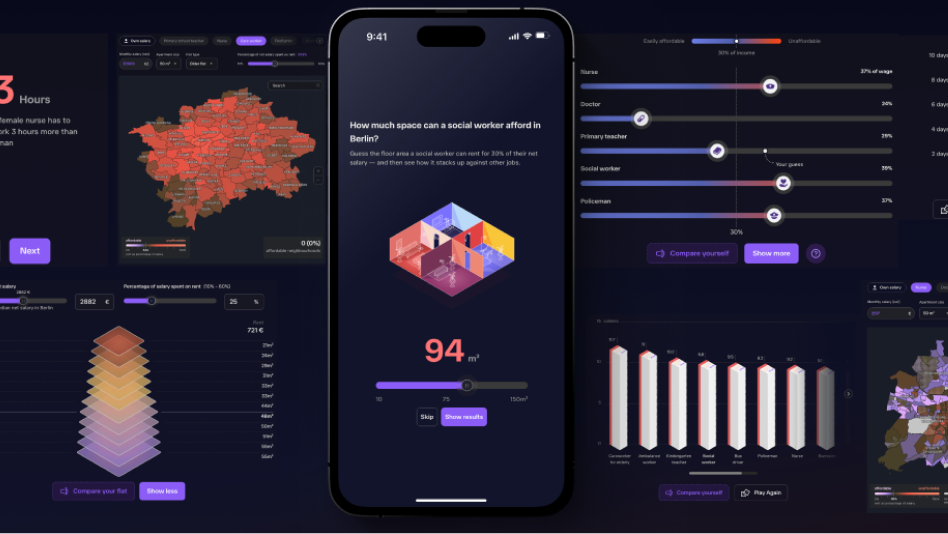
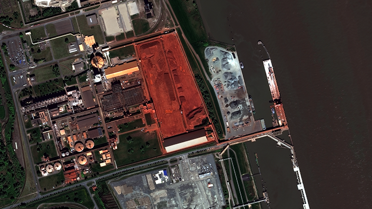

Selected Works

Interactive Journalism · 2025 Voices Award
The Housing Games
An interactive, game-like investigation into Europe's housing crisis — letting readers experience complex data in a meaningful and playful way.

Product Design · SaaS
Vertical52
End-to-end product design for a satellite image analytics platform — turning a fragmented dashboard into a coherent, fast, and genuinely usable tool.

Editorial · Data Journalism
Data Viz Graphics
Award-winning maps, charts, and interactive graphics for international news outlets — translating complex datasets into stories readers actually understand.
Art Direction · Editorial
Art Direction
Visual identity and art direction for long-form digital features — building the systems, templates, and visual language for stories that need to breathe.